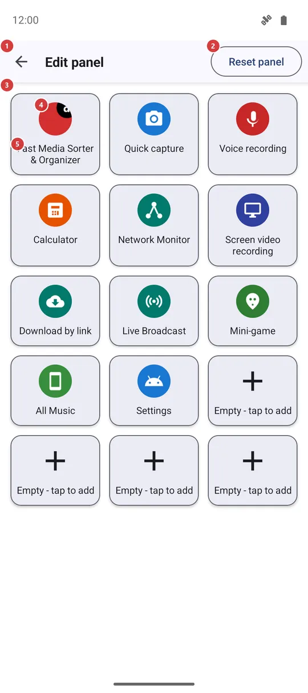
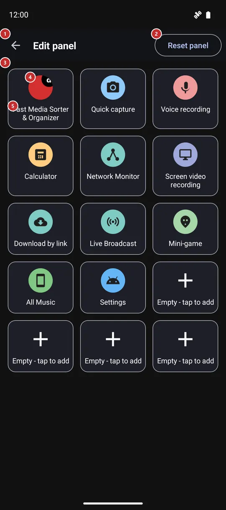

Edit panel
What this is for
Choose what the Quick launch panel shows. The panel has fifteen fixed places; here you fill each one with an app, a tool of FastMediaSorter, one of your resources or an Android settings screen, and you can swap them around or clear them.


In this order
- You get here from the Edit button of the Quick launch panel, by tapping a free place on it, or from the edge gesture settings. The grid 3 shows the panel as it is now.
- Tap a free place 5 or any tile 4. The Add to panel window 9 asks what kind of shortcut you want: an Android app, a FastMediaSorter feature, a FastMediaSorter resource or an Android setting.
- A list of that kind opens (11 to 14). Tap the item you want and it goes into the place at once. A short list has no search field; a long one gets it 10.
- To change a tile that is already there, long-press it: Move 6 swaps it with another place, Replace 7 opens the same kind choice again, Remove 8 empties the place.
- Reset panel 2 puts the factory set back after you confirm. Back 1 leaves the screen - every change is saved as you make it.
The elements
Top bar
1BackLeaves the screen and returns to the panel.
There is nothing to save: each change is stored as soon as you make it, and the panel shows it the next time it opens.
2Reset panelPuts the panel back to the set it had after installation.
The app asks Reset panel? and explains that the panel returns to the default set of apps and shortcuts created at install. Nothing changes until you confirm. The factory set is FastMediaSorter first, then its own tools that exist in your edition, one of your resources and Android Settings, with the last places left free.
- Undo
- All your own tiles are lost and the factory set returns. To get a tile back, add it again.
Tile grid
3Tile gridThe fifteen fixed places of the panel.
The grid has three columns in a narrow window and five in a wide one, the same as the panel. The number of places cannot be changed. Every place is either a tile with an icon and a name or a free place with a plus. The grid takes keyboard and D-pad focus when the screen opens.
4TileA shortcut that is already on the panel.
Tap it to replace it: the Add to panel window opens for the same place, and whatever you pick takes its spot. Long-press it for the menu with Move, Replace and Remove. The icon shows what the tile opens: an app keeps its own icon, and tools and settings have theirs.
5Empty - tap to addA free place waiting for a shortcut.
Tap it, or long-press it - both do the same here - and the Add to panel window opens. The place stays free until you pick something.
Tile menu (long press)
6MoveMoves a tile to another place.
A list of places numbered from 1 to 15 opens. Pick the number you want. If that place already has a tile, the two tiles swap; if it is free, the tile just moves there. Cancel leaves everything where it was.
7ReplacePuts something else into the same place.
Opens the same Add to panel window as a tap on the tile. The new choice takes the place of the old one; the old tile is not kept.
8RemoveEmpties the place.
The tile is taken off the panel at once, without a question, and the place becomes free again. The app, tool or resource it pointed to is not touched.
- Undo
- The tile cannot be brought back with an undo button. Add it again from the free place, or use Reset panel to get the factory set.
Add to panel window
9Add to panelAsks what kind of shortcut should go into this place.
A short list with four choices: Android app, FastMediaSorter feature, FastMediaSorter resource and Android OS settings. Each opens its own list. Cancel closes the window and changes nothing. The same window opens for Replace.
10Type to searchNarrows a long list as you type.
The field has a clear button and appears only when the list is longer than the window; a short list shows no field. Type part of a name and the rows narrow as you go. If nothing matches, the list says Nothing found. It works the same way in all four lists below.
11Choose an appLists the apps you can pin as a tile.
Shows the apps installed on this phone that can be launched, sorted by name and each with its own icon. Tap one and it goes into the place. If you later remove that app from the phone, its tile opens nothing.
12Choose a featureLists tools and screens of FastMediaSorter itself.
Shows what exists in your edition, for example the calculator, the stopwatch, the network monitor, the mini-game, Streams and Favorites; the tools come first and the rest follow. A tool that is switched off in Settings stays in the list with the note Off - tap to turn on; as a tile it opens the matching setting instead of the tool. Features that are not part of your edition are not listed.
13Choose Android OS settingLists Android settings screens you can pin.
Shows only the screens this phone can really open: Settings, Wi-Fi, Bluetooth, Display, Sound, Battery, Storage, App info, Date and time and, where your phone has them, Developer options, Battery saver, Auto-rotate, Accessibility, Wireless networks, Data usage, NFC, VPN, Location and Hotspot. A screen your phone does not have is simply missing.
14Choose a resourceLists your resources you can pin.
Shows your resources by name, each with the icon of its type, such as a device folder, a network share or a cloud folder. One tile points to one resource; tapping the tile on the panel later opens that resource in the file browser.